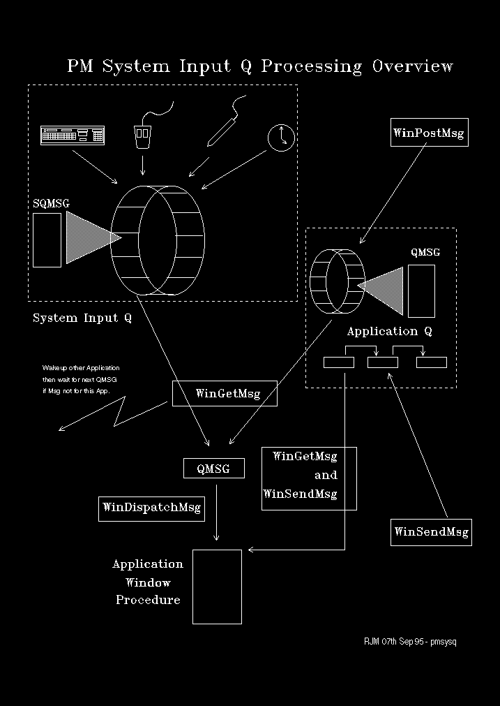

PM messages are generated either as the result of user interaction with the system or by the use of various PM APIs. Both PM and non-PM applications may generate PM messages.
Messages may flow:
synchronously, that is, require processing by the recipient before the sender can continue, or
asynchronously, that is, where no reposonse is required.
They may flow between threads (inter-thread messages) or from a thread to itself (intra-thread messages).
These characteristics require a message queuing mechanism to be implemented so that message order may be preserved.
Note:
A message's meaning may often depend on the outcome of a preceding message. For example, consider the action of the F4 key after the Alt key has been pressed.
Each PM message thread has two queues or more strictly speaking a message queue and a message list. There may be only one instance of these two structures per thread.
This queue is used for the receipt of asynchronous messages generated by use of the WinPostMsg API.
This is used for the receipt of synchronous messages sent using WinSendMsg.
WinCreateMsgQueue also creates a message event semaphore that is posted whenever a message, synchronous or asynchronous, is posted; or a message response is generated. This is the semaphore on which WinGetMsg waits for message notification.
There is a system queue, which is also a circular array. Messages are enqueued on the system queue by the PMDD.SYS device driver as the result of external events deriving directly from:
Mouse activity
Keyboard activity
Use of a light pen
Timer ticks.
PM maintains knowledge of who the current, mouse, keyboard, pen, and event receivers are. When an external event causes a message to be queued on the system queue, PM posts the message event semaphore of the current receiver of that particular event.
An application may define Window Procedures - entry points within the message thread. These are associated with a PM Window and a message queue. They receive control when a message is dispatched, that is dequeued from the message queue or message list. More than one window procedure may be serviced by the same message queue/list. Which one should be dispatched is determined from the HWND, which is one of the parameters associated with a message.
When WinGetMsg receives a message event notification, it first checks for the presence of received synchronous messages, if there are any dispatches them directly. Next it looks for an application generated (posted) message and finally for a system queue message.
The application thread explicitly dispatches asynchronous messages using WinDispatchMsg.
The System Queue entries are SQMSG structures.
The Application Queue entries are QMSG structures.
The Application Send Message List comprises a chain of SMS structures.
This scenario is illustrated in the following diagram: